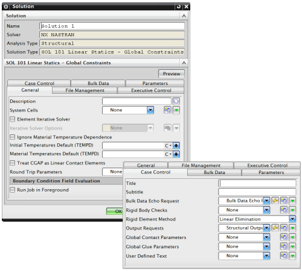
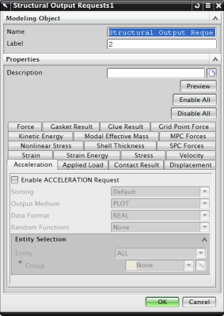
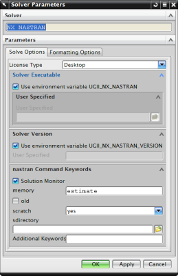

在完成网格定义以及边界条件应用以准备有限元模型以后，您就可以求解模型。
在通过定义网格和应用边界条件准备好有限元模型之后，便可执行求解过程。在对模型求解时，软件为选定的求解器创建输入文件，然后开始处理它。也可以只创建求解器输入文件，而实际上不对其求解。
解算方案储存在仿真文件中，其中包含一组载荷、约束以及仿真对象。
您可以使用这些条件来求解，或者新建由不同的条件定义的解算方案。
每个仿真中可以使用不限数量的解算方案。
对于 NX Nastran 中的结构求解，约束可以储存在主解算方案中，也可以储存在子工况中；对于热力学求解，载荷与约束都储存在子工况中。
解算方案属性将为选定的求解器定义选项，您可以为新建的解算方案定义解算方案属性，或者为在求解前为现有解算方案定义属性。
可用选项取决于求解器类型(比如 NX Nastran)、分析类型(比如结构分析、线性静态分析)以及解算方案类型(比如 SOL 101 静态 — 全局约束)。

输出请求将确定从求解器输出的数据类型。
有些输出类型默认是已选的，您必须显式选择其它的类型。要修改默认输出请求，使用用户默认设置对话框。
您可以保存一个已命名的输出请求组，并在其它解算方案中重用。

求解器参数中包含对选定求解器的设置。
